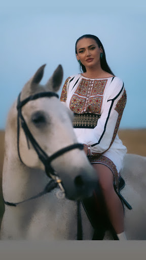
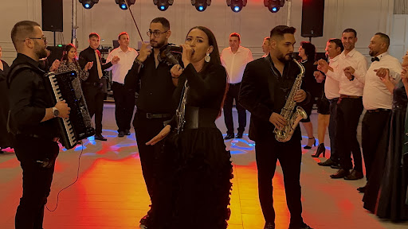

Galerie de Spectacole
Descoperă cele mai frumoase imagini live de la nunți și momente de la fiecare spectacol de muzică populară susținut de Ioana Balan. O selecție curată de momente surprinse pe scenă.
Momente și Portrete

Grand Music Events
Show Live Grand Music Events


Sesiune Foto Tematică
Moment live

Formație live


Eveniment live
Show cu formația
Evenimente
Vezi canalul YouTube
Cum arată un eveniment
Esența Tradiției în Imagini.
Rămâneți la curent cu ultimele mele spectacole și călătorii culturale prin țară. Rezervați acum o experiență muzicală autentică.
5,0 · 61 de recenzii Google · Grand Music Events

IOANA BALAN
Autenticitate în fiecare notă.